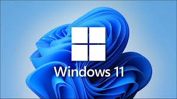

En instalación de sowfware te pondremos y/o te actualizaremos a la versión más reciente que se pueda tanto en:
(Si pulsas en las fotos te llevará a las páginas oficiales de los sistemas operativos,para que estes al tanto de todo)
LINUX

WINDOWS
MAC/APPLE.En la foto te llevará a donde están los MACS de ultima generación ya que el sistema operativo de "la manzana" es un sofware privado